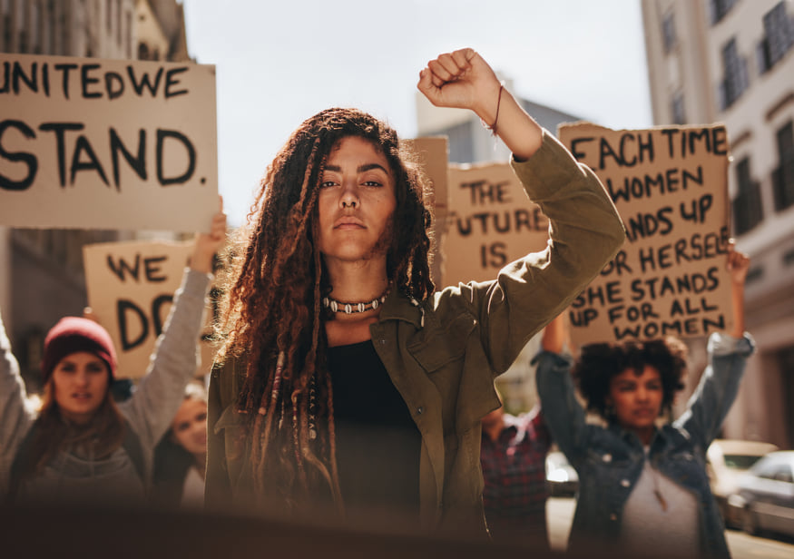
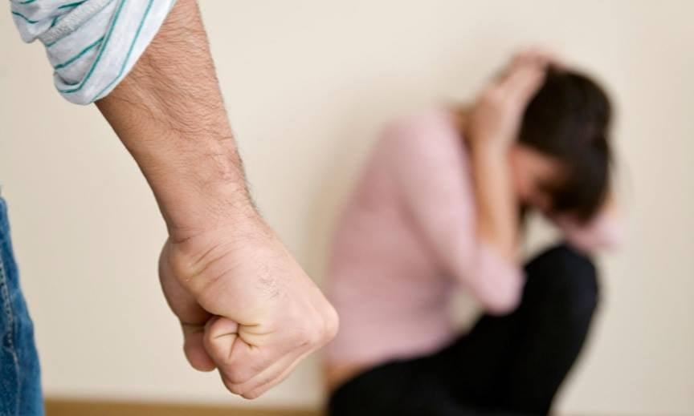
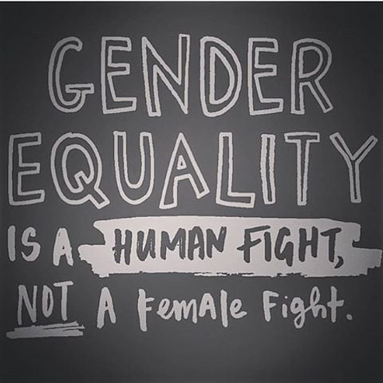

Gender inequality is the idea that men and women are not equal and that gender affects an individual's living experience. These differences arise from distinctions in biology, psychology, and cultural norms. Some of these types of distinctions are empirically grounded while others appear to be socially constructed..This can have a long-time effect on one's upbringing,liberty and rights .For an instance , the percentage of girls enrolled in school to boys in underdeveloped nations is extremely low.This consequently leads to lesser working women and the illerate portion of women affects the economic development of a country.
 Gender inequality is an important issue we should all be aware about because, we are all children of God and we should be considered as one but we are being categorized into what we can do and what we can't do based on nothing but our sex and it isn't fair because we aren't able to be our true self and make our own decisions on what we want to wear , what we want to be and a whole lot more .Who says men should not wear makeup? who says women should not stay out late ? It is just not fair that men have to be strong and women fragile. After all, we are all human and all we are asking for is the same treatment ,the same respect , the same rights and thats it. We should all know about gender inequality because there are women around the world who are not being treated as equal, they are still considered slaves , an item in a showroom, an assistant to men and this is just not it.There are some people in the world wishing for a son to be born instead of a daughter just because the society thinks that woman can not bring honor and wealth to their family .So inorder to bring justice tothe girl who was killed right after being born by her father because she was a girl, for the little Priya who is cooking food for her father instead of studying with her brother ,for Dema who was married to a man 15 years older than her without her consent or Cassie who was not accepted into the neighbourhood baseball team just because she was a girl. This is for them as well as for ourselves .Yet what do we chose to do? We choose to stare at the ball lying in our court.But what we do not realize is that by not doing anything against it, we are just surrendering ourselves to these invisible barriers.
The answer to this question would be EVERYONE. Eveyone can do their small part in creating a free society where our gender doesn't matter.Parents can teach their children about gender equity by giving them equal attention and setting good examples on how everyone should behave instead of feeding into their brains that this is men's job or cooking is women's job.Teachers' can teach students from a young age that you can become whatever you want to be in life without listening to the ones that say you can't. For example: people say that being a mechanic or a travel guide is not something a women can become or that women belong in kitchens, but teachers being the ultimate source of a child's information can teach them otherwise .That way a child will not be introduced to differentiation of genders. Husbands can support their wives by dividing the chores, encouraging her growth in her career , give her the freedom to decide what she does instead of ordering her to do things.Women could help other women in need and empower them by telling them to fight against the injustice that they suffer instead of giving up the fight .Employers could fix a unit start up salary and promote his emplyees strictly based on their performance. If all of us do a little something towards this movement, the probability of extincting inequality is higher than a few of us doing amazing things for it.

The proofs/ evidences that show that gender iequality is still happening can be seen in the following cases:
The fact that female employees are paid lesser than the males is a solid proof that women are being discriminated in their career pathway . It is a depressing truth that a woman's effort is appreciated less .Even when female workers put equal effort into their work just as men , it is outrageous that men are paid higher .This creates an income gap between genders and consequently , the living standards are affected as well.
No matter how educated or successful a woman is in her career , she is still the one who does more of the chores,takes care of her children and makes food for the family .And studies have shown that women take more leave than men to look after sick kids, or help their children during exam time. It is because of all the hurdles she has to jump over before reaching the starting point where men are that the working population of women is lower than men's . A woman has to balance her career as well as her personal life just as a man has to but the difference is that she has to take about 75% responsibility of the chores,where as a man does only 25% of the chores in most cases.
The unfair treatment doesn't stop just in unequal treatment but to the extreme , women are more likely to be harassed sexually and verbally as displayed in the video below.And they are common victims to human trafficking .We can see through such events that to some people , women are just items in a showroom that you can buy if you like and use it anyway you want.But to me this is aboslutely false , women are more than that , we are smart,kind ,loving,courageous and selfless heroes without capes.
In the techonological field, the portion of women working has been incresing rapidly .Consequently ,they use the technological advancement in protecting,empowering and inspiring women to do more ,to do better and to break out of their shells . Technology has played an important field in increasing women employment .
The answer is no. While we fight against gender discrimination , it is equally important that we do not discrimante against men or hate them .Fighting for gender equality means fighting for equal opportunity and not bearing ill will against men because it wasn't them who created these barriers for us, although some of them did implement them, but it was the rotten part of the society with some women included that created orthodox ideas for how we should be and how we shouldn't be , what we can do and what we can't and etc..Infact some men are with us in this fight, not because they are doing it for the female members in their family , but they are doing it because they know that if all of us are one ,the world would be a fair and wonderful place to live in.Neutrality is a vital aspect of bringing gender equality, it is necessary that we support women without being sexists.